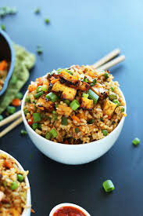

Welcome to the Vegan World!
Discover delicious vegan recipes, learn about the health benefits, and make the transition to a plant-based lifestyle.
Vegan Recipes
Vegan Avocado Toast

price:1000px
- 2 slices of whole-grain bread
- 1 ripe avocado
- Salt and pepper to taste
- Optional toppings: chili flakes, tomatoes, lemon juice
Simply mash the avocado and spread it on the toasted bread. Add your favorite toppings and enjoy!
Vegan Buddha Bowl
- Brown rice or quinoa
- Chickpeas or tofu
- Leafy greens (spinach, kale)
- Avocado slices
- Vegan dressing (lemon tahini, olive oil) 
Layer the ingredients in a bowl, drizzle with dressing, and enjoy a nutrient-packed meal!
Benefits of Veganism
Veganism offers numerous health and environmental benefits, including:
- Improved heart health
- Better digestion
- Weight management
- Reduced risk of chronic diseases
- Lower environmental impact
Contact Us
Have questions or need help with your vegan journey? Reach out to us!